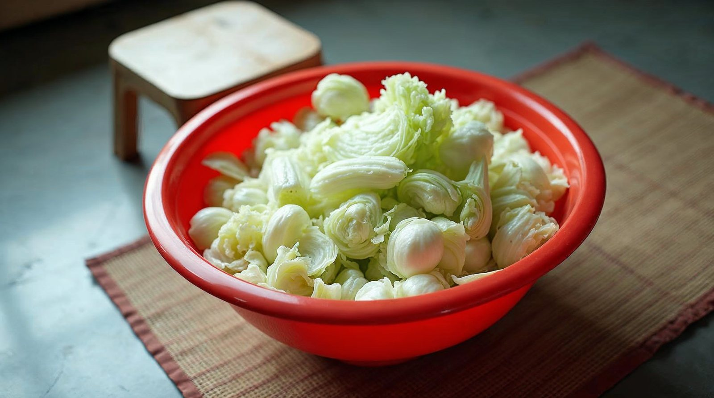
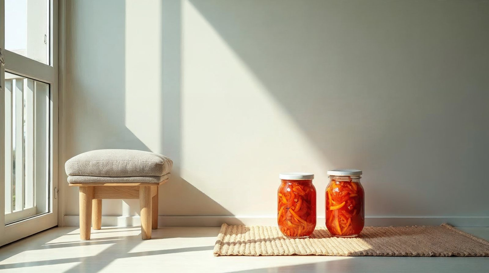
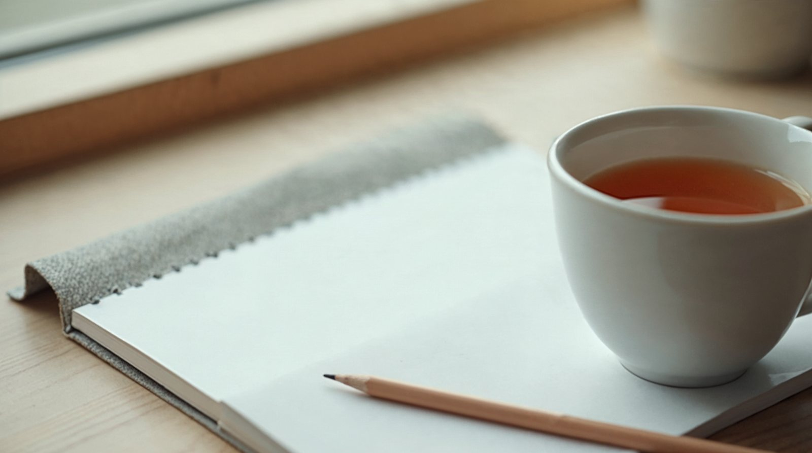

이종호 한의사 감수좋은꿈참사랑한의원 대표원장 (한의사 면허번호 19769)발행 2026-11-25 · 수정 2026-11-26
이 글의 차례
- 왜 이런 불편이 생길 수 있나요
- 허리와 무릎이 함께 아픈 것은 왜 그럴까요
- 근육이 뭉친 통증과 다른 신호는 어떻게 구분할까요
- 먼저 이렇게 여쭙니다
- 일상에서 먼저 해 볼 수 있는 것
- 바닥에서 일어설 때는 이렇게 움직여 보세요
- 잠자리와 찜질은 어떻게 챙길까요
- 김장 다음 주, 출근과 집안일은 어떻게 할까요
- 상황별 예시
- 며칠 지켜보는 동안 무엇을 비교할까요
- 스스로 점검해 보세요
- 얼마나 지켜보고 언제 상담할까요
- 어르신이라면 이런 점을 더 살펴 주세요
- 한의원에서 함께 살필 수 있는 경우
- 이렇게 기록해 오시면 상담이 쉬워집니다
- 이런 증상은 먼저 확인이 필요합니다
- 함께 읽으면 좋은 글
쪼그려 앉아 김장을 한 뒤 허리와 무릎이 아프다면, 며칠은 바닥에 앉는 자세를 피하고 일어설 때 어떤 느낌인지 살펴보는 것이 먼저입니다. 낮은 대야 앞에서 허리를 숙이고 무릎을 깊이 굽힌 채 몇 시간을 보내면 허리 근육과 무릎 앞쪽이 오래 눌리고 당겨집니다.
일을 마치고 일어서려는데 허리가 바로 펴지지 않았다는 분이 많고, 상도동처럼 언덕과 계단이 많은 동네에서는 다음 날 장을 보러 내려가는 길에 무릎이 먼저 불편해졌다는 분도 있습니다. 며칠 사이 움직일 때 조금씩 덜 불편해지는지가 첫 기준이며, 다리 저림이 함께 있다면 지켜보기보다 진찰로 확인하는 것이 먼저입니다.
왜 이런 불편이 생길 수 있나요
- 무릎을 깊이 굽힌 자세가 오래 이어지면 무릎 앞쪽에 눌리는 힘이 커질 수 있습니다.
- 허리를 둥글게 숙인 채 버티면 허리 근육이 쉬지 못하고 굳기 쉽습니다.
- 엉덩이와 허벅지 근육이 오래 접혀 있다가 갑자기 펴지면, 일어서는 순간 허리가 대신 버티게 될 수 있습니다.
- 무거운 대야를 바닥에서 들어 올릴 때 허리에 순간적으로 힘이 실립니다.
- 찬 바닥과 찬 공기에서 일하면 근육이 더 뻣뻣해질 수 있습니다.
- 평소 허리나 무릎이 약했던 분은 하루 몰아 쓴 부담을 더 크게 느낄 수 있습니다.
허리와 무릎이 함께 아픈 것은 왜 그럴까요
쪼그려 앉는 자세는 허리와 무릎, 고관절을 한꺼번에 깊이 접는 자세입니다. 그래서 어느 한 곳만 지치기보다 서로 부담을 주고받습니다. 무릎이 뻣뻣해 깊이 굽히기 어려우면 허리가 더 숙여지고, 허리가 굳으면 일어설 때 무릎이 대신 힘을 씁니다.
엉덩이와 허벅지 뒤쪽 근육도 이 연결의 한가운데에 있습니다. 몇 시간 접혀 있던 근육은 일어서는 순간 쉽게 늘어나지 않아, 허리를 펴려 할 때 엉치 쪽이 당기거나 무릎 앞이 시큰한 느낌으로 나타나기도 합니다. 진찰 때 아픈 곳만이 아니라 엉덩이와 골반 주변을 함께 보는 이유입니다.
근육이 뭉친 통증과 다른 신호는 어떻게 구분할까요
- 허리 양옆이 묵직하고 움직일수록 조금씩 풀린다면 오래 버틴 근육의 피로인 경우가 많습니다.
- 엉덩이에서 다리 뒤쪽이나 바깥쪽으로 찌릿하게 뻗치고 저리다면 허리에서 내려가는 신경 쪽 부담을 함께 살핍니다.
- 무릎 앞쪽이 계단을 내려갈 때만 시큰하다면 무릎뼈 주변의 부담을, 무릎 안쪽이 붓고 굽힐 때 걸린다면 관절 안쪽 상태를 따로 확인합니다.
- 무릎 뒤가 불룩하게 붓고 당긴다면 자세 탓으로만 넘기지 말고 무릎 관절 상태를 따로 확인합니다. 종아리까지 한쪽 다리가 붓고 아프다면 병원에서 혈전 여부를 먼저 확인해야 합니다.
이 구분은 진료 때 설명을 돕기 위한 것이니, 스스로 판단하기 어렵다면 언제부터 어디가 어떻게 불편했는지만 적어 오셔도 충분합니다.
먼저 이렇게 여쭙니다
- 아픈 곳이 허리 가운데인가요, 한쪽인가요, 엉덩이까지 이어지나요?
- 김장 당일 밤부터 아팠나요, 다음 날 아침부터 아팠나요?
- 앉았다 일어설 때와 계단을 내려갈 때 중 언제 더 불편한가요?
- 다리로 뻗치는 통증이나 저림이 있나요?
- 무릎이 붓거나 굽힐 때 걸리는 느낌이 있나요?
- 평소에도 바닥에 앉는 생활을 자주 하시나요?
- 김장 때 무거운 대야나 김치통을 직접 들어 옮기셨나요?
- 아픈 뒤 진통제나 파스를 쓰셨다면 그때 덜했나요?
이렇게 여쭙는 것은 그날 몸에 가해진 부담이 어느 정도였는지, 평소 생활에서 이어지는 부담은 무엇인지를 나눠 보기 위해서입니다. 같은 허리 통증이라도 무거운 것을 들다 생긴 것인지, 오래 접힌 자세에서 생긴 것인지에 따라 집에서 조심할 동작이 달라집니다.

일상에서 먼저 해 볼 수 있는 것
- 며칠은 바닥 대신 의자나 낮은 목욕 의자에 앉기
- 일어설 때 한쪽 무릎을 세우고 손으로 짚어 천천히 일어나기
- 누울 때 무릎 아래에 베개를 받쳐 허리 부담 줄이기
- 따뜻한 물로 샤워한 뒤 허리를 무리 없이 좌우로 가볍게 움직이기
- 무거운 통은 무릎을 굽혀 몸 가까이 붙여 들기
- 언덕길과 계단은 며칠 천천히, 난간을 잡고 내려가기
- 다음에는 대야를 식탁이나 평상 높이에 올려놓고 서서 하기
바닥에서 일어설 때는 이렇게 움직여 보세요
허리가 아픈 며칠 동안은 바닥에서 일어나는 순서만 바꿔도 부담을 덜 수 있습니다. 급하게 허리부터 펴지 말고 아래 순서를 천천히 따라 해 보세요.
- 먼저 한쪽 무릎을 바닥에 대고(무릎이 아프면 방석을 받치고) 다른 쪽 발을 앞으로 내딛습니다.
- 앞쪽 무릎이나 가까운 의자, 탁자를 두 손으로 짚습니다.
- 숨을 내쉬면서 손과 앞다리의 힘으로 몸을 밀어 올리고, 허리는 마지막에 폅니다.
- 다 일어선 뒤에는 바로 걷지 말고 몇 초 서서 허리를 가볍게 좌우로 움직여 봅니다.
이불에서 일어날 때도 비슷합니다. 똑바로 누운 채 윗몸을 일으키지 말고, 옆으로 돌아누운 뒤 팔로 바닥을 밀며 앉는 순서가 허리에 덜 무리가 됩니다.
잠자리와 찜질은 어떻게 챙길까요
허리가 아픈 날 밤에는 누운 자세가 다음 날 아침을 좌우하기도 합니다. 똑바로 누울 때 무릎 아래를 받치는 것과 함께, 옆으로 누울 때는 무릎 사이에 쿠션을 끼워 골반이 비틀리지 않게 해 보세요.
바닥에 얇은 요를 깔고 주무시는 분은 찬 기운이 허리로 올라와 아침에 더 뻣뻣할 수 있습니다. 며칠은 요를 한 겹 더 깔거나 침대를 쓰고, 잠옷 위로 허리를 덮어 식지 않게 해 주세요.
찜질은 삐끗한 듯 갑자기 아픈 직후가 아니라면 따뜻하게 하는 쪽이 대체로 편합니다. 무릎은 붓고 뜨거운 날에는 차갑게, 뻣뻣하기만 한 날에는 따뜻하게 합니다. 어느 쪽이든 수건을 두르고 15분 안쪽으로 짧게 하며, 전기 찜질기를 켠 채 잠들지 않도록 합니다. 찜질 뒤 오히려 더 욱신거린다면 그 방법은 멈추고 진료 때 말씀해 주세요.
김장 다음 주, 출근과 집안일은 어떻게 할까요
김장 뒤에는 바로 일상이 이어집니다. 오래 앉아 일하는 분은 의자에 앉을 때 엉덩이를 깊숙이 붙여 허리가 둥글게 말리지 않게 하고, 틈틈이 일어나 몇 걸음이라도 걸어 주세요.
집에서는 걸레질처럼 무릎을 꿇거나 허리를 숙이는 일을 며칠 미루거나 밀대로 바꿉니다. 빨래를 널 때도 바구니를 바닥에 두지 말고 의자 위에 올려 두면 허리를 숙이는 횟수가 줄어듭니다.
장을 볼 때는 무거운 물건을 한 번에 들고 언덕을 오르기보다 바퀴 달린 장바구니를 쓰거나 두 번에 나눕니다. 김장 뒤 남은 김치통 정리도 한꺼번에 하지 말고 며칠에 나눠 하시길 권합니다. 김치냉장고 아래 칸에 넣을 때는 허리만 숙이지 말고 한쪽 무릎을 굽혀 몸을 낮춘 뒤 통을 몸 가까이 붙여 넣으세요.

상황별 예시
- 예를 들어 어르신이 바닥에 앉아 하루 종일 양념을 버무린 경우, 다음 날 아침 이불에서 일어나기 힘들고 무릎을 펼 때 뻣뻣할 수 있습니다. 며칠은 바닥 생활 대신 침대나 의자를 쓰고, 일어날 때 손으로 짚는 순서를 지키며 움직임이 조금씩 편해지는지 봅니다.
- 예를 들어 평소 오래 앉아 일하는 직장인이 주말에 집안 김장을 도운 경우, 허리를 숙인 채 무거운 대야를 나르다 허리 한쪽이 뜨끔할 수 있습니다. 월요일 출근길 계단과 오래 앉는 자세가 겹치면 불편이 이어지기 쉬워, 한 시간에 한 번 일어나 걷는 것부터 챙깁니다.
- 예를 들어 예전에 무릎이 자주 붓던 분이 쪼그려 앉아 일한 경우, 무릎이 다시 붓고 계단을 내려갈 때 시큰할 수 있습니다. 이런 때는 며칠 참고 지내기보다 붓기 정도를 먼저 확인해 보시길 권합니다.
며칠 지켜보는 동안 무엇을 비교할까요
허리와 무릎은 하루 안에서도 시간대에 따라 느낌이 달라서, 매일 같은 순간을 기준으로 비교하는 것이 좋습니다. 아침에 이불에서 일어날 때, 처음 계단을 내려갈 때, 저녁에 소파에서 일어설 때 세 번만 정해 아픈 정도를 적어 보세요.
아침보다 저녁에 더 심해진다면 낮 동안 허리와 무릎을 여전히 많이 쓰고 있다는 뜻일 수 있어, 집안일의 양부터 다시 살펴봅니다.
무릎은 붓기도 함께 봅니다. 한쪽 무릎만 볼록하거나 따뜻한 날이 며칠째 그대로라면 지켜보는 기간을 길게 잡지 마세요.
스스로 점검해 보세요
- 아픈 곳이 허리 가운데인지, 한쪽인지, 엉덩이나 다리로 이어지는지 확인했다.
- 앉았다 일어설 때, 계단을 내려갈 때, 오래 서 있을 때 가운데 언제 더 불편한지 적어 보았다.
- 무릎이 반대쪽보다 부어 보이거나 뜨거운지 비교했다.
- 다리 저림이나 힘 빠짐이 있는지 살폈다.
- 누워서 쉴 때는 편한지, 누워도 아픈지 확인했다.
- 김장 전에도 허리나 무릎이 불편했던 적이 있는지 돌아보았다.
얼마나 지켜보고 언제 상담할까요
- 바닥 생활을 줄이고 며칠 지나며 일어서는 동작이 조금씩 편해진다면 생활 관리를 이어 가며 지켜볼 수 있습니다.
- 일주일이 지나도 아침마다 허리가 바로 펴지지 않거나, 계단에서 무릎 통증이 그대로라면 진료에서 움직임을 함께 확인해 보시길 권합니다.
- 삐끗한 듯 갑자기 아파 움직이기 어렵다면 처음 며칠은 가까운 간격으로 상태를 살피는 경우가 많습니다.
어르신이라면 이런 점을 더 살펴 주세요
나이가 들수록 같은 일을 해도 회복에 시간이 더 걸릴 수 있고, 아파서 움직임을 줄이는 사이 다리 힘이 함께 떨어지기 쉽습니다. 김장 뒤 며칠 누워만 지내셨다면 통증이 줄어든 뒤에도 걸음이 느려지거나 계단이 더 무섭게 느껴질 수 있습니다.
그래서 통증과 함께 걸음걸이와 넘어질 뻔한 일이 있었는지도 여쭙습니다. 집 안 문턱이나 욕실 바닥처럼 미끄럽고 걸리기 쉬운 곳은 아픈 동안 특히 조심하시고, 언덕길 장보기는 가족과 함께 나서시길 권합니다.
복지관 낙상 강연에서도 말씀드렸지만, 한동안 집에 가만히 있으면 밖에 나오기가 점점 귀찮아지고 몸은 그만큼 더 약해집니다. 아픈 동안 언덕길을 걸으실 때는 보폭을 줄여 종종걸음으로 천천히 디뎌 보세요. 마음은 예전 걸음을 기억해도 몸은 지금의 몸이기 때문입니다.
자녀분이 따로 사신다면 김장 다음 날 전화로 일어날 때 어떤지, 계단은 괜찮은지 한 번 물어봐 주시는 것도 좋습니다. 어르신은 아파도 괜찮다고 말씀하시는 경우가 많아, 구체적인 동작으로 여쭤보는 편이 상태를 알기 쉽습니다.

한의원에서 함께 살필 수 있는 경우
- 쪼그려 앉는 일을 한 뒤마다 허리와 무릎이 번갈아 아픈 경우 동작과 아픈 지점을 함께 살핍니다.
- 일어설 때 허리가 바로 펴지지 않는 날이 며칠 이어지는 경우 허리와 골반 주변의 긴장을 함께 살핍니다.
- 무릎이 붓거나 계단에서 불편한 경우 필요하다고 판단될 때 초음파로 상태를 함께 확인합니다.
좋은꿈참사랑한의원에서는 첫 방문 때 맥부터 짚으며 김장을 어떤 자세로 몇 시간 하셨는지, 언제부터 어떤 동작에서 아픈지 여쭙습니다. 그다음 허리를 숙이고 젖히는 움직임, 앉았다 일어서는 동작, 무릎을 굽히고 펴는 범위를 확인하고, 다리 힘과 저림 같은 신경 증상도 살핍니다.
무릎이 붓거나 힘줄 쪽 불편이 의심되면 초음파로 함께 봅니다. 상태에 맞춰 침·약침·추나 등을 정하고, 귀가 전에는 집에서 피할 자세와 지켜볼 점, 다음에 확인할 동작을 알려 드립니다.

이렇게 기록해 오시면 상담이 쉬워집니다
- 일한 시간과 앉은 자세(쪼그려, 양반다리, 의자)
- 가장 불편한 동작과 아픈 정도(0~10)
- 누워 있을 때와 움직일 때의 통증 차이
- 다리 저림이나 무릎 붓기가 있었는지
- 찜질 뒤 편했는지 불편했는지
- 예전에 허리나 무릎으로 치료받은 적이 있는지
온 가족이 겨우내 먹을 김치를 바닥에 앉아 버무리느라 허리와 무릎이 고생했습니다. 며칠은 바닥 대신 의자에 앉으시고, 뒷정리는 나눠 맡기셔도 괜찮습니다. 다음에 오시면 아침에 이불에서 일어나실 때 어떤지부터 여쭙겠습니다.
이런 증상은 먼저 확인이 필요합니다
- 다리 힘이 점점 빠지거나 다리 감각이 둔해지는 경우
- 대소변을 보기 어렵거나 조절이 안 되는 경우, 엉덩이·사타구니 감각이 둔해지는 경우
이런 신호가 있으면 한의원보다 가까운 병원이나 응급실을 먼저 찾으세요.
함께 읽으면 좋은 글
- 김장을 하고 난 다음 날 손목과 엄지 쪽이 시큰할 때는 어떻게 살피나요?
- 계단을 내려갈 때 무릎이 아프면 한의원에서는 무엇을 먼저 묻나요?
- 허리를 삐끗해 움직이기 힘든 급성 요추 염좌는 첫 며칠 어떻게 살피나요?

여쭙는 것
- 아픈 곳이 허리 가운데인가요, 한쪽인가요, 엉덩이까지 이어지나요?
- 김장 당일 밤부터 아팠나요, 다음 날 아침부터 아팠나요?
- 앉았다 일어설 때와 계단을 내려갈 때 중 언제 더 불편한가요?
생활에서 해 볼 것
- 며칠은 바닥 대신 의자나 낮은 목욕 의자에 앉기
- 일어설 때 한쪽 무릎을 세우고 손으로 짚어 천천히 일어나기
- 누울 때 무릎 아래에 베개를 받쳐 허리 부담 줄이기
한의원에서 함께 살필 것
- 쪼그려 앉는 일을 한 뒤마다 허리와 무릎이 번갈아 아픈 경우 동작과 아픈 지점을 함…
- 일어설 때 허리가 바로 펴지지 않는 날이 며칠 이어지는 경우 허리와 골반 주변의 긴…
- 무릎이 붓거나 계단에서 불편한 경우 필요하다고 판단될 때 초음파로 상태를 함께 확인…
먼저 확인이 필요한 신호
- 다리 힘이 점점 빠지거나 다리 감각이 둔해지는 경우
- 대소변을 보기 어렵거나 조절이 안 되는 경우, 엉덩이·사타구니 감각이 둔해지는 경우
한눈에 보는 표
| 구분 | 핵심 |
|---|---|
| 여쭙는 것 | 아픈 곳이 허리 가운데인가요, 한쪽인가요, 엉덩이까지 이어지나요? 김장 당일 밤부터 아팠나요, 다음 날 아침부터 아팠나요? |
| 생활에서 해 볼 것 | 며칠은 바닥 대신 의자나 낮은 목욕 의자에 앉기 일어설 때 한쪽 무릎을 세우고 손으로 짚어 천천히 일어나기 |
| 한의원에서 함께 살필 것 | 쪼그려 앉는 일을 한 뒤마다 허리와 무릎이 번갈아 아픈 경우 동작과 아픈 지점을 함께 살핍니다. 일어설 때 허리가 바로 펴지지 않는 날이 며칠 이어지는 경우 허리와 골반 주변의 긴장을 함께 살핍니다. |
| 먼저 확인이 필요한 신호 | 다리 힘이 점점 빠지거나 다리 감각이 둔해지는 경우 대소변을 보기 어렵거나 조절이 안 되는 경우, 엉덩이·사타구니 감각이 둔해지는 경우 |
자주 묻는 질문
허리가 아플 때는 누워만 있어야 하나요?
심한 통증이 지나가면 무리 없는 범위에서 조금씩 움직이는 것이 굳는 것을 줄이는 데 도움이 될 수 있습니다. 어느 정도가 맞는지는 상태를 보고 함께 정합니다.
내년 김장 때는 무엇을 준비하면 되나요?
대야를 식탁 높이에 올리고 낮은 의자를 쓰며, 한 시간에 한 번 일어나 허리를 펴는 시간을 정해 보세요. 절이기와 버무리기를 이틀로 나누는 것도 방법입니다.
부모님이 해마다 김장 뒤에 고생하세요. 같이 가도 되나요?
함께 오시면 평소 생활과 불편한 동작을 더 자세히 들을 수 있습니다. 평일은 09:30~20:00(점심 13:00~14:00), 토·일·공휴일은 09:30~15:00(점심시간 없음)에 진료합니다.
좋은꿈참사랑한의원은 재진 때 지난번 이야기부터 이어서 여쭙니다. 진료시간과 예약은 오시는 길에서 확인하세요.
어디서 상담받을 수 있나요?
좋은꿈참사랑한의원은 서울 동작구 만양로2길 2 신성빌딩 3층·5층(서울 동작구 상도동, 7호선 상도역 3번 출구 근처)에 있습니다. 한의사 3명(이종호 대표원장, 조영기 수석진료원장, 정원영 진료원장)이 진료합니다. 진료시간은 평일 09:30~20:00(점심 13:00~14:00), 토·일·공휴일 09:30~15:00이며, 방문 전 전화로 확인을 권합니다. 예약은 네이버 예약, 카카오톡 상담, 전화 02-815-7510로 받습니다.
이 글은 일반적인 건강 정보이며 개인의 진단이나 치료를 대신하지 않습니다. 증상이 있거나 복용 중인 약이 있다면 진료를 통해 확인하세요. 치료 효과는 개인마다 다를 수 있습니다.
작성 기준: 일반적으로 알려져 있는 건강 정보를 참고해 정리했습니다(대표원장 감수). 증상 기록은 1~2주 동안 하루 1회, 비슷한 시간에 적어 오시면 지난 상태와 비교하기 쉽습니다.